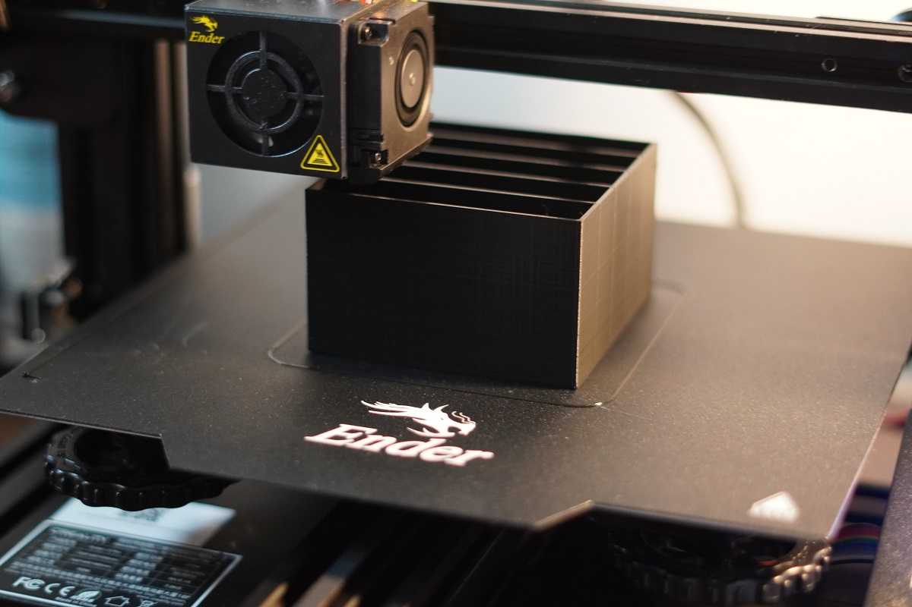
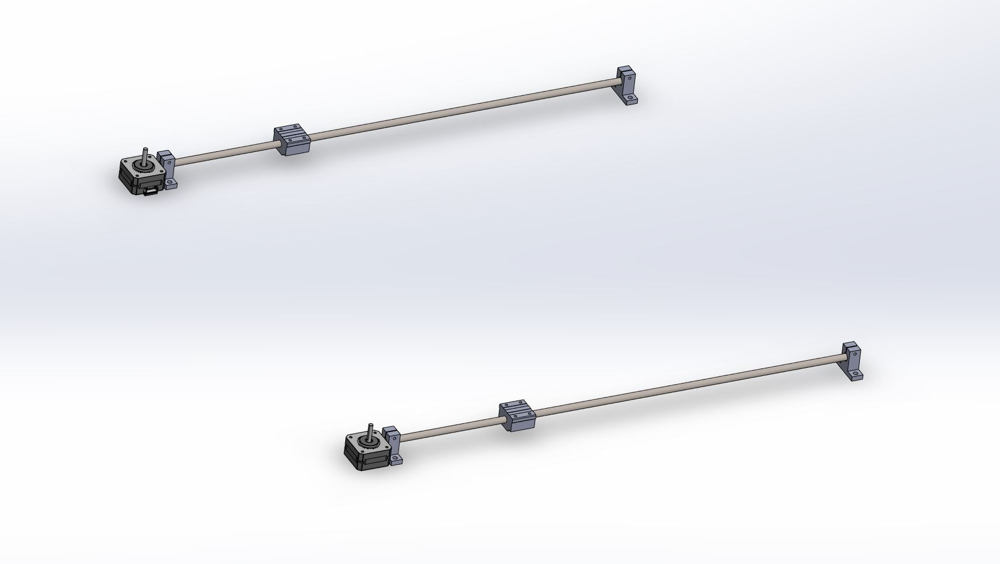
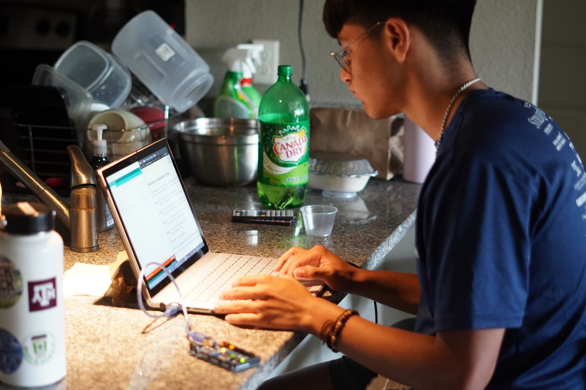
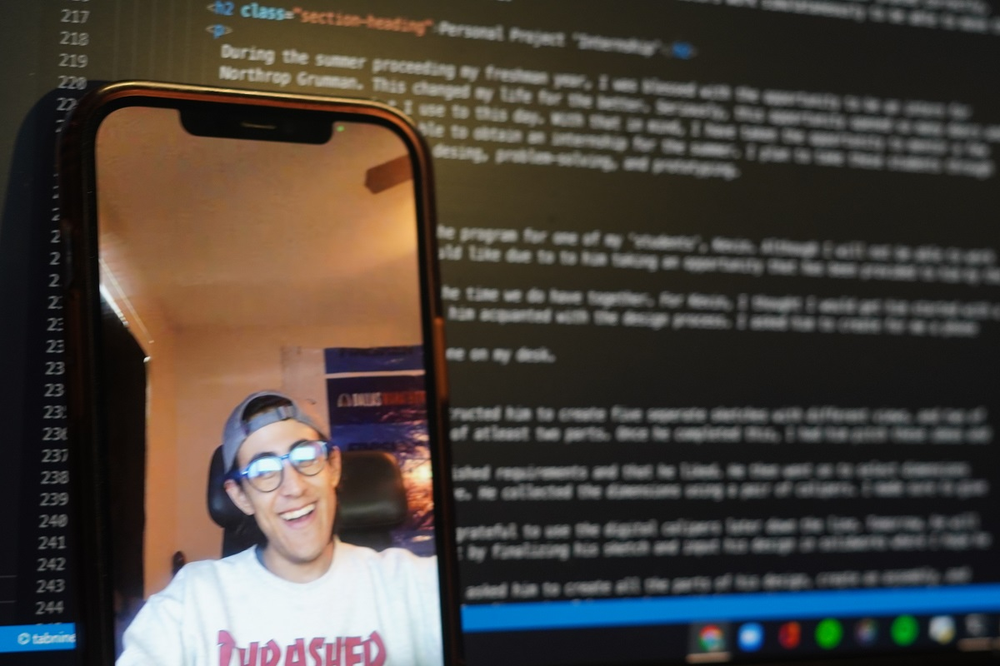

It was a busy busy busy day. I loved every second of it. Being that today is the 15th day of my Journey, I feel like I am going to have grown immensly by the time July 25th comes around.
I was able to make it out the FEDC and work on Gambit. It was a sad day as I completely took apart the board. I am going to be working on creating a refined model in the coming days to get working on the actual board itself
Karen, Vincent, and Evelyn also made it out today. They worked on their projects and other personal things as some of them are taking classes or involved in other ventures.
I go home tomorrow, so I hope I am able to continue working on some of my projects. However, I am going to be spending most of my time with my family and working on the SHPE report that is due in 6 days.
3D Printing
I kept the printer at work today as I wanted to create more storage for some of the things laying around me room. The outer shell seemed to print smoothly, and I just have the drawers that I hope get done whenever I make it back here next week.
 More Storage!!!Gambit
Taking apart the chessboard today hurt my heart. All the hard work put into it over the course of the semester being destroyed was rough to go through with. However, I know it is for the better. There are a significant amount of things that are to be redesigned to ensure the final product is one that is worthwhile.
The main changes that are being done are the motor change, the height change, and the cable management that will be implemented.
The TeardownI hope to narrow in on the areas that will be redesigned over the weekend in hopes of performing some test prints throghout next week.
 Gantry ModelPersonal Project "Internship"
Karen, Vincent, and Evely were able to make it out today and continue working on some of their things. I wasn't able to work with Karen for too long, but from what I saw, she is on the right track I am sure she will be able to begin printing soon.
Vincent continued adding dimensions and such to his design, but I felt he was getting comfortable or a little bored with it. So, I decided to give him access to one of my arduinos and stepper motors to create a script that would take in input and perform some actions with respect to the stepper motors.
 Arduino TimeAlong with doing this personal project internship, Evelyn is also taking a class this summer. She seemed a bit stressed so I assigned her with a task that I was hoping to put off until next week.
Over the semester, I was given an obsurd amount of notebooks from a company that SHPE partnered with this year. I thought it would be a good idea to give them to the 'interns' to document their successes and failures and their overall journey this summer. However, I wanted to ensure that they made these journals theirs. I am a huge fan of customization and want them to make this summer their and work on things that they want to do. So with that, I asked Evelyn to paint on her notebook whatever came to mind. It turned out amazing. Vincent ended up joining along as he took a break from the arduino and am proud of what they were able to make with some paint and a brush.
Paint Your WaySHPE
6 days from now, the NCP report for SHPE is due. I need to get it taken care of as soon as possible to allow for any officers to check over the work to ensure it is ready to go. Aside from being with family and driving the two and half hours home, I plan to be working on the report for most of the day.
Web Development
Garduno decided he would take some time out of his day to clean up some of the files I have throughout my website. It was something I had wanted to do in the coming days, but I am extremely appraciative of him looking out for me.
 Fixer UpperVR Development
One area that I want to get into is VR development. I hope to pick up a project that will give me a good introduction into how things are done. Today, I finally watched my first tutorial, and truthfully it does not seem all that bad. I know I will regret saying that once I actually start on a project with it though.
Habit Tracking
Today, I journaled, worked out, read, tracked my caloric intake, and worked on at least one of my personal projects. Today was a good day.
What I am thankful for
I am thankful for the interns. They bring me great joy as I hope to leave a tiny mark on them as they embark on their undergraduate journey.
You just need to get 1% better each day. Do More. - J.D.